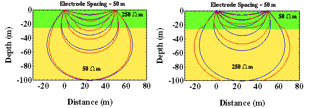

Variation in Apparent Resistivity: Layered Versus Homogeneous Media
An important consequence of the deviation in current flow in layered media is how it can affect our measurements of apparent resistivity.
Imagine that we configured an electrical experiment over these two models by measuring the potential difference at two places on the surface of the earth between the two current electrodes and then computed the apparent resistivity. In these examples, we will assume that the potential electrodes are between the two current electrodes and have a fixed separation that remains constant throughout the experiment. This is the same geometry for the four electrode experiment, two current and two potential, that was described previously.
Because current is preferentially being pulled into the lower layer for the model on the left, the current density between the two current electrodes near the surface of the Earth (where we are measuring electrical potential) will be smaller than that which would be observed if the Earth were homogeneous. By the same token for the model on the right, the current density would be higher than that observed in a homogeneous Earth, because the current is being preferentially channeled through the near-surface layer.
Recall that our expression for the computation of apparent resistivity, shown below, is a function of electrode spacing r (which is the same for the two situations shown above), current i (assume that we are putting the same current in the ground for each model), and potential difference ΔV (voltage) between the two potential electrodes. It can be shown that the potential difference, ΔV, is proportional to the current density around the potential electrodes. Thus, for the case shown on the left, the potential difference will be smaller than would have been observed in a homogeneous Earth, because the current density is smaller than that which would have been observed in a homogeneous Earth. Therefore, the measured apparent resistivity will be decreased. Conversely, for the case shown on the right, the potential difference will be larger than that observed in a homogeneous Earth, and the measured apparent resistivity will likewise be larger.

Resistivity
- Current Flow and Ohm's Law pg 4
- The Fund. Electrical Property is Resistivity, NOT Resistance pg 5
- Resistivities for Common Earth Materialspg 6
- Current Density and Electric Fieldpg 7
- A First Estimate of Resistivitypg 8
- Current Flow From Two Closely Spaced Electrodespg 9
- A Practical Way of Measuring Resistivity pg 10
- Sources of Noise pg 11
- Depth of Current Penetration V.S. Current ElectrodeSpacing pg 12
- Current Flow in Layered Media pg 13
- Variation in Apparent Resistivity: Layered Versus Homogeneous Media pg 14
- Current Flow in Layered Media Versus Electrode Spacing pg 15
- A Second Example of Current Flow in Layered Mediapg 16